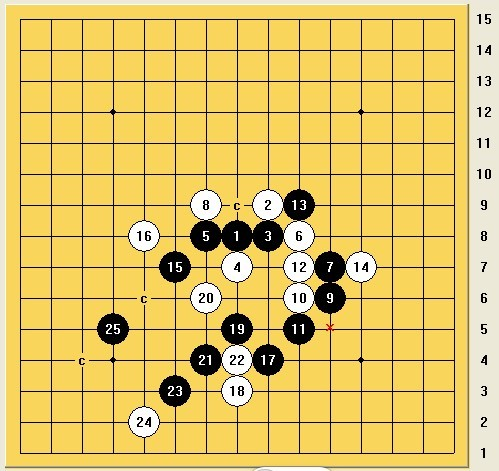
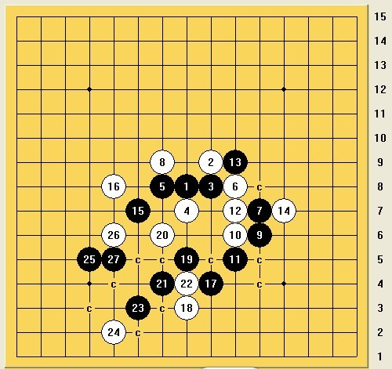
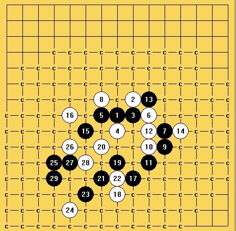
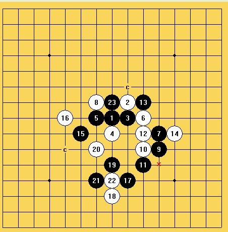
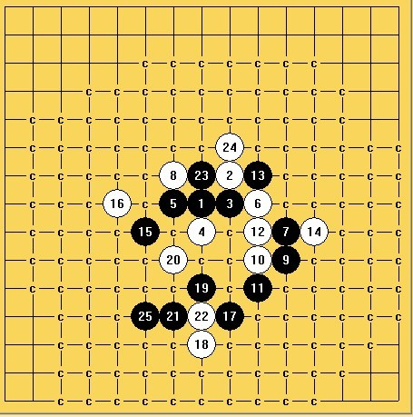

灿烂的阳光 映照在奥列维斯特大教堂的花窗上
#1 灿烂的阳光 映照在奥列维斯特大教堂的花窗上 作者：屏蔽 发表时间：2013-8-14 8:26:41
最终轮次
目测坦克和曹冬和棋曹冬安然保组，兰志仁还需稍稍努力，汪清清能否摆脱垫底？问题在于他的对手是战到最后全力争取保组的冈部宽。
预测：
坦克和曹冬 苏切胜大角 可汗胜Aivo兰志仁胜Salnikov 冈部胜汪清清 Epifanov胜马丁
最终名次：
1 坦克
2 苏切
3 大角 可汗（循小分相同，不知道这里的破同分怎么算的，至少算直胜的话大角季军）
5 曹冬
6 兰志仁
7 冈部
8 Epifanov
9 Aivo
10 马丁
11 Salnikov
12 汪清清
#2 re:灿烂的阳光 映照在奥列维斯特大教堂的花窗上 作者：小丸.net 发表时间：2013-8-14 8:29:58
说出来都是泪啊。。。。#3 Re:灿烂的阳光 映照在奥列维斯特大教堂的花窗上 作者：幾 发表时间：2013-8-14 10:14:09
中国队成绩还不错。排名在上半段#4 Re:灿烂的阳光 映照在奥列维斯特大教堂的花窗上 作者：屏蔽 发表时间：2013-8-14 10:23:12
如果排名真的如我预料 那么我客观冷静地看待一下：
前五名的排名其实是很正常，三个世界冠军，一个日本名人，我们还应该额外称道陈科翰发挥上佳。曹冬的四连败给大家太深刻的印象，但幸运地是他并没有因此崩溃，从最后结果来看也算正常。
兰志仁首次参加世锦赛，打出第六名，再参考排在他前面的那些人，至少这个成绩不能说差。冈部宽则继续守住了日本的尊严。
后五名中，只能说Aivo发挥较差，我感觉他也属于看状态的棋手，此外根据世锦赛的情况来看，他似乎很难从逆境中恢复过来或下顶风棋，一旦前半段发挥不好，后半段常常玩票。
Salnikov、Epifanov、马丁、汪清清四人的实力和其排名是相称的，并不需要过多感慨。
［ 幾同学于 2013-8-14 11:45:30 时花20金币送鲜花一朵］
［ 幾同学于 2013-8-14 11:45:30 时花20金币送鲜花一朵］
［ 幾同学于 2013-8-14 11:45:30 时花20金币送鲜花一朵］
#5 Re:灿烂的阳光 映照在奥列维斯特大教堂的花窗上 作者：烟雨淋晨尘 发表时间：2013-8-14 10:26:30
冈部宽这轮要废。#6 Re:灿烂的阳光 映照在奥列维斯特大教堂的花窗上 作者：屏蔽 发表时间：2013-8-14 10:29:34
如果曹冬的四连败分散开的话……比如……在世锦赛打出5胜2和4负这样的成绩对任何人来说都不算差。#7 Re:灿烂的阳光 映照在奥列维斯特大教堂的花窗上 作者：屏蔽 发表时间：2013-8-14 10:31:48
这次的世锦赛给我的感觉太“燥热”了
坦克羽化登仙之后，剩下的人都快打成一锅粥了 虽然对局还不错 但是从大面来看真的是很焦躁
#8 Re:烟雨淋晨尘【==Re:灿烂的阳光 映照在奥列维斯特大教堂的花窗上==】 作者：小丸.net 发表时间：2013-8-14 10:40:03
引用：冈部宽最后一轮要拼命的。。。。汪清清凶多吉少啊
原文由 烟雨淋晨尘 发表于 2013-8-14 10:26:30 :
冈部宽这轮要废。
#9 Re:灿烂的阳光 映照在奥列维斯特大教堂的花窗上 作者：没事摆石子玩 发表时间：2013-8-14 11:26:29
不太认同坦克会那么容易跟曹冬和棋 无论什么结果他都已经夺冠 为什么要主动接受和棋难道仅仅为了成全曹冬保组么？ 剧情如此发展显得无趣而庸俗 更希望两位冠军级棋手拿出真本事 又不是输不起［ 小丸.net同学于 2013-8-14 11:31:09 时花20金币送鲜花一朵］
［ 小丸.net同学于 2013-8-14 11:31:09 时花20金币送鲜花一朵］
［ 小丸.net同学于 2013-8-14 11:31:09 时花20金币送鲜花一朵］
［ 小丸.net同学于 2013-8-14 11:31:09 时花20金币送鲜花一朵］
［ 小丸.net同学于 2013-8-14 11:31:09 时花20金币送鲜花一朵］
［ 小丸.net同学于 2013-8-14 11:31:09 时花20金币送鲜花一朵］
［ 小丸.net同学于 2013-8-14 11:31:09 时花20金币送鲜花一朵］
［ 小丸.net同学于 2013-8-14 11:31:09 时花20金币送鲜花一朵］
［ 小丸.net同学于 2013-8-14 11:31:09 时花20金币送鲜花一朵］
［ 小丸.net同学于 2013-8-14 11:31:09 时花20金币送鲜花一朵］
#10 Re:灿烂的阳光 映照在奥列维斯特大教堂的花窗上 作者：如火流年 发表时间：2013-8-14 11:42:19
坦克没有压力的话更强大吧。。。不过曹冬也非常强大。。。没必要太担心#11 Re:灿烂的阳光 映照在奥列维斯特大教堂的花窗上 作者：掌棋如烟 发表时间：2013-8-14 12:06:05
你不觉得少排了个第四名吗?....#12 Re:灿烂的阳光 映照在奥列维斯特大教堂的花窗上 作者：掌棋如烟 发表时间：2013-8-14 12:06:53
哦,是可汗....并列第四...#13 Re:灿烂的阳光 映照在奥列维斯特大教堂的花窗上 作者：屏蔽 发表时间：2013-8-14 12:52:27
最后一轮了 大家有什么想说的么……#14 Re:灿烂的阳光 映照在奥列维斯特大教堂的花窗上 作者：屏蔽 发表时间：2013-8-14 12:52:47
我想说我今天头疼……#15 Re:灿烂的阳光 映照在奥列维斯特大教堂的花窗上 作者：小丸.net 发表时间：2013-8-14 12:56:00
你肯定发烧了，现在最好的方法就是去打针，因为吃感冒药会睡觉。。。。下午要看比赛，你肯定顶不住。。。。#16 Re:灿烂的阳光 映照在奥列维斯特大教堂的花窗上 作者：屏蔽 发表时间：2013-8-14 12:56:55
为毛我觉得楼上的回复很熟悉
#17 Re:灿烂的阳光 映照在奥列维斯特大教堂的花窗上 作者：小丸.net 发表时间：2013-8-14 13:06:26
这孩子肯定烧坏了。。。。
#18 Re:灿烂的阳光 映照在奥列维斯特大教堂的花窗上 作者：幾 发表时间：2013-8-14 13:06:34
汪清清好像发烧了。估计影响了几轮比赛。#19 re:灿烂的阳光 映照在奥列维斯特大教堂的花窗上 作者：小丸.net 发表时间：2013-8-14 14:13:34
比赛开始了。。。导演，开什么局啊。。。。#20 Re:灿烂的阳光 映照在奥列维斯特大教堂的花窗上 作者：屏蔽 发表时间：2013-8-14 14:20:39
她没问 目测没啥心情 我估计是瑞2疏1花5浦6云雨4六选一#21 Re:灿烂的阳光 映照在奥列维斯特大教堂的花窗上 作者：屏蔽 发表时间：2013-8-14 14:24:18
sushkov执白对大角一脸苦逼
可汗执黑对aivo猛烈进攻
#22 Re:灿烂的阳光 映照在奥列维斯特大教堂的花窗上 作者：屏蔽 发表时间：2013-8-14 14:25:31
大角柔和流
Aivo钢板防
#23 Re:灿烂的阳光 映照在奥列维斯特大教堂的花窗上 作者：屏蔽 发表时间：2013-8-14 14:28:46
可汗你这攻得有点激动啊 枉我猜你能赢#24 Re:灿烂的阳光 映照在奥列维斯特大教堂的花窗上 作者：屏蔽 发表时间：2013-8-14 14:34:40
可汗这么进攻的话 Aivo会怎么防？
#25 Re:灿烂的阳光 映照在奥列维斯特大教堂的花窗上 作者：屏蔽 发表时间：2013-8-14 14:41:24
志仁兄此盘有戏。
#26 Re:灿烂的阳光 映照在奥列维斯特大教堂的花窗上 作者：屏蔽 发表时间：2013-8-14 14:44:02
汪清清开了溪月 我跪了 而且冈部宽竟然还没交换
冬瓜执白瑞星战坦克 继续坐等坦克攻满盘……
#27 Re:灿烂的阳光 映照在奥列维斯特大教堂的花窗上 作者：屏蔽 发表时间：2013-8-14 14:45:04
志仁正常进展。
#28 re:灿烂的阳光 映照在奥列维斯特大教堂的花窗上 作者：小丸.net 发表时间：2013-8-14 15:01:06
冈部宽换了。。。。现在清清拿白。#29 Re:灿烂的阳光 映照在奥列维斯特大教堂的花窗上 作者：屏蔽 发表时间：2013-8-14 15:03:06
原来是这样 我看错了 那我估计汪清清果然要输了……#30 Re:灿烂的阳光 映照在奥列维斯特大教堂的花窗上 作者：萧翎 发表时间：2013-8-14 15:03:27
兰黑还是白？#31 Re:灿烂的阳光 映照在奥列维斯特大教堂的花窗上 作者：屏蔽 发表时间：2013-8-14 15:04:14
大家来猜猜Salnikov能不能走出d11的唯一防……
#32 Re:灿烂的阳光 映照在奥列维斯特大教堂的花窗上 作者：屏蔽 发表时间：2013-8-14 15:05:25
不管怎么说 中国已经保证了至少一个国家名额……#33 Re:灿烂的阳光 映照在奥列维斯特大教堂的花窗上 作者：屏蔽 发表时间：2013-8-14 15:08:22
坦克走这个11就是火力全开……
#34 Re:灿烂的阳光 映照在奥列维斯特大教堂的花窗上 作者：一期一会 发表时间：2013-8-14 15:19:28
是曹冬开瑞坦克交换的么？#35 re:灿烂的阳光 映照在奥列维斯特大教堂的花窗上 作者：小丸.net 发表时间：2013-8-14 15:21:33
#36 Re:灿烂的阳光 映照在奥列维斯特大教堂的花窗上 作者：萧翎 发表时间：2013-8-14 15:22:51
兰那盘是26d11还是26、27交换后走d11？#37 re:灿烂的阳光 映照在奥列维斯特大教堂的花窗上 作者：小丸.net 发表时间：2013-8-14 15:23:49
曹冬开瑞星 坦克交换#38 re:灿烂的阳光 映照在奥列维斯特大教堂的花窗上 作者：小丸.net 发表时间：2013-8-14 15:26:03
肯定要先交换啦，直接26就挂了。#39 Re:灿烂的阳光 映照在奥列维斯特大教堂的花窗上 作者：萧翎 发表时间：2013-8-14 15:27:04
那不是slover简单扫瞄就知道了的吗？#40 Re:灿烂的阳光 映照在奥列维斯特大教堂的花窗上 作者：一期一会 发表时间：2013-8-14 15:34:29
还有小马丁的一桌呢，怎么web上没有？#41 Re:灿烂的阳光 映照在奥列维斯特大教堂的花窗上 作者：屏蔽 发表时间：2013-8-14 15:38:10
哦 莫非我记错了 反正 恩 就是那么回事#42 Re:灿烂的阳光 映照在奥列维斯特大教堂的花窗上 作者：屏蔽 发表时间：2013-8-14 15:39:10
我怎么觉得黑棋扯着蛋了
#43 Re:灿烂的阳光 映照在奥列维斯特大教堂的花窗上 作者：屏蔽 发表时间：2013-8-14 15:39:52
目测9-i7
#44 Re:灿烂的阳光 映照在奥列维斯特大教堂的花窗上 作者：屏蔽 发表时间：2013-8-14 15:41:59
马丁还是天元 但好歹已经动了
不知道这变化后续如何 有些混乱 坦克如何抉择？
#45 re:灿烂的阳光 映照在奥列维斯特大教堂的花窗上 作者：小丸.net 发表时间：2013-8-14 15:43:12
#46 Re:灿烂的阳光 映照在奥列维斯特大教堂的花窗上 作者：屏蔽 发表时间：2013-8-14 15:44:23
懒得拆了 大家猜黑胜白胜 马丁执黑
#47 Re:灿烂的阳光 映照在奥列维斯特大教堂的花窗上 作者：屏蔽 发表时间：2013-8-14 15:46:18
22反挡白必胜！看Epifanov如何？！#48 Re:灿烂的阳光 映照在奥列维斯特大教堂的花窗上 作者：屏蔽 发表时间：2013-8-14 15:48:01
感觉冈部宽形势不错
#49 Re:灿烂的阳光 映照在奥列维斯特大教堂的花窗上 作者：屏蔽 发表时间：2013-8-14 15:48:55
大家好 我是装甲车 坦克开始进攻了#50 re:灿烂的阳光 映照在奥列维斯特大教堂的花窗上 作者：小丸.net 发表时间：2013-8-14 15:51:01
#51 Re:灿烂的阳光 映照在奥列维斯特大教堂的花窗上 作者：屏蔽 发表时间：2013-8-14 15:52:05
Aivo状态忽然上来了……感觉目前白稍好 E9？
#52 Re:灿烂的阳光 映照在奥列维斯特大教堂的花窗上 作者：萧翎 发表时间：2013-8-14 15:54:19
曹冬优势了，就看他懂不懂这个白好的谱了。#53 Re:灿烂的阳光 映照在奥列维斯特大教堂的花窗上 作者：屏蔽 发表时间：2013-8-14 16:06:28
兰志仁那盘 我觉得Salnikov即将陷入迷惑 然后速败#54 Re:灿烂的阳光 映照在奥列维斯特大教堂的花窗上 作者：萧翎 发表时间：2013-8-14 16:08:12
兰能不能杀出来？应该可以。那天和他聊天，谈计算力，他计算力应该远远在我之上，所以应该没有问题。#55 Re:灿烂的阳光 映照在奥列维斯特大教堂的花窗上 作者：屏蔽 发表时间：2013-8-14 16:09:15
远远毛线啊（馆长脸
你这是夸他呢还是黑他呢…… 
［此帖子已被 屏蔽 在 2013-8-14 16:09:45 编辑过］
#56 Re:灿烂的阳光 映照在奥列维斯特大教堂的花窗上 作者：屏蔽 发表时间：2013-8-14 16:11:12
目测黑棋下一手i4斜眠三
#57 Re:灿烂的阳光 映照在奥列维斯特大教堂的花窗上 作者：屏蔽 发表时间：2013-8-14 16:12:55
Epifanov是否有简单胜的勇气？
#58 Re:灿烂的阳光 映照在奥列维斯特大教堂的花窗上 作者：屏蔽 发表时间：2013-8-14 16:16:56
曹冬单挡
#59 Re:灿烂的阳光 映照在奥列维斯特大教堂的花窗上 作者：萧翎 发表时间：2013-8-14 16:20:57
25走3下面。白优呵呵#60 Re:灿烂的阳光 映照在奥列维斯特大教堂的花窗上 作者：屏蔽 发表时间：2013-8-14 16:25:52
虽然我觉得一般人都不会走那里的……不过金光护体的坦克没准真的会那么走#61 Re:灿烂的阳光 映照在奥列维斯特大教堂的花窗上 作者：屏蔽 发表时间：2013-8-14 16:27:36
兰志仁准确的黑必胜！
#62 Re:灿烂的阳光 映照在奥列维斯特大教堂的花窗上 作者：屏蔽 发表时间：2013-8-14 16:28:42
#63 Re:灿烂的阳光 映照在奥列维斯特大教堂的花窗上 作者：萧翎 发表时间：2013-8-14 16:31:42
曹冬应该可能拆过那路吧！#64 Re:灿烂的阳光 映照在奥列维斯特大教堂的花窗上 作者：开心思琪 发表时间：2013-8-14 16:37:12
可汗的39没防43点#65 Re:灿烂的阳光 映照在奥列维斯特大教堂的花窗上 作者：开心思琪 发表时间：2013-8-14 16:39:52
白走到44了，谁也没看见那个杀吗#66 Re:灿烂的阳光 映照在奥列维斯特大教堂的花窗上 作者：开心思琪 发表时间：2013-8-14 16:48:24
刚刚电脑显示39不在43点上，不知道为什么#67 Re:灿烂的阳光 映照在奥列维斯特大教堂的花窗上 作者：屏蔽 发表时间：2013-8-14 16:49:57
Aivo瞎jb走竟然赢了……
兰志仁也赢了
#68 Re:灿烂的阳光 映照在奥列维斯特大教堂的花窗上 作者：屏蔽 发表时间：2013-8-14 16:53:49
大概算了算小分 兰志仁应该已经保组了。#69 Re:灿烂的阳光 映照在奥列维斯特大教堂的花窗上 作者：屏蔽 发表时间：2013-8-14 16:54:25
曹冬和棋也能保组 取胜还能冲季军 咦？小分没算#70 Re:灿烂的阳光 映照在奥列维斯特大教堂的花窗上 作者：屏蔽 发表时间：2013-8-14 16:55:25
Epifanov也杀了。#71 re:灿烂的阳光 映照在奥列维斯特大教堂的花窗上 作者：小丸.net 发表时间：2013-8-14 17:03:50
啊，睡了一会儿真是爽歪歪。。。。#72 re:灿烂的阳光 映照在奥列维斯特大教堂的花窗上 作者：小丸.net 发表时间：2013-8-14 17:04:26
黄修一同学来微信说，曹冬可能会挂。。。。。#73 Re:灿烂的阳光 映照在奥列维斯特大教堂的花窗上 作者：屏蔽 发表时间：2013-8-14 17:28:56
剩下三盘初步感觉：曹冬、sushkov、汪清清能赢……是的 冈部宽我觉得他快崩了#74 Re:灿烂的阳光 映照在奥列维斯特大教堂的花窗上 作者：萧翎 发表时间：2013-8-14 17:31:10
汪那盘，13、14对吗？如果是我不确定，如果是正常13，黑必胜了吧#75 Re:灿烂的阳光 映照在奥列维斯特大教堂的花窗上 作者：屏蔽 发表时间：2013-8-14 17:32:06
曹冬那盘感觉黑棋被分断得太严重了 不如白棋有活力#76 Re:灿烂的阳光 映照在奥列维斯特大教堂的花窗上 作者：絕版賭徒 发表时间：2013-8-14 17:34:27
苏切局面上被地毯了，可惜啊#77 Re:灿烂的阳光 映照在奥列维斯特大教堂的花窗上 作者：屏蔽 发表时间：2013-8-14 17:35:18
正常13你指哪个？#78 Re:灿烂的阳光 映照在奥列维斯特大教堂的花窗上 作者：屏蔽 发表时间：2013-8-14 17:36:15
怎么地毯的 右上角进攻？#79 Re:灿烂的阳光 映照在奥列维斯特大教堂的花窗上 作者：絕版賭徒 发表时间：2013-8-14 17:37:08
21左下，15左左下，两手搞定#80 Re:灿烂的阳光 映照在奥列维斯特大教堂的花窗上 作者：絕版賭徒 发表时间：2013-8-14 17:39:26


#81 Re:灿烂的阳光 映照在奥列维斯特大教堂的花窗上 作者：伤情路 发表时间：2013-8-14 17:42:02
冈部宽的那13被3步抓33..
#82 Re:灿烂的阳光 映照在奥列维斯特大教堂的花窗上 作者：絕版賭徒 发表时间：2013-8-14 17:43:53


不拆了，N种杀法，越看越伤心
#83 Re:灿烂的阳光 映照在奥列维斯特大教堂的花窗上 作者：烟雨淋晨尘 发表时间：2013-8-14 17:51:36
是啊，冈部那个13手，比较能闹。
#84 Re:灿烂的阳光 映照在奥列维斯特大教堂的花窗上 作者：屏蔽 发表时间：2013-8-14 18:22:01
曹冬那盘和棋了 可算猜对一盘#85 re:灿烂的阳光 映照在奥列维斯特大教堂的花窗上 作者：小丸.net 发表时间：2013-8-14 18:37:15
清清赢了。冈部宽超时#86 Re:灿烂的阳光 映照在奥列维斯特大教堂的花窗上 作者：屏蔽 发表时间：2013-8-14 18:38:13
Tunnet
大角
sushkov
曹
兰
陈
Ep
冈部
汪
马
萨
#87 re:灿烂的阳光 映照在奥列维斯特大教堂的花窗上 作者：小丸.net 发表时间：2013-8-14 18:42:28
比赛全部结束。。。。#88 Re:灿烂的阳光 映照在奥列维斯特大教堂的花窗上 作者：小丸.net 发表时间：2013-8-14 18:44:56
| 开局名称 | 数量 | 比例 | 黑胜 | 黑胜率 | 白胜 | 白胜率 | 假先胜 | 假先胜率 | 假后胜 | 假后胜率 | 和棋 | 和棋率 |
| 金星局 | 13 | 19.7% | 5 | 38.46% | 4 | 30.77% | 2 | 15.38% | 7 | 53.85% | 4 | 30.77% |
| 溪月局 | 11 | 16.67% | 6 | 54.55% | 5 | 45.45% | 7 | 63.64% | 4 | 36.36% | 0 | 0% |
| 瑞星局 | 7 | 10.61% | 4 | 57.14% | 0 | 0% | 2 | 28.57% | 2 | 28.57% | 3 | 42.86% |
| 长星局 | 6 | 9.09% | 1 | 16.67% | 4 | 66.67% | 2 | 33.33% | 3 | 50% | 1 | 16.67% |
| 寒星局 | 5 | 7.58% | 0 | 0% | 5 | 100% | 1 | 20% | 4 | 80% | 0 | 0% |
| 水月局 | 5 | 7.58% | 2 | 40% | 2 | 40% | 4 | 80% | 0 | 0% | 1 | 20% |
| 丘月局 | 4 | 6.06% | 3 | 75% | 0 | 0% | 2 | 50% | 1 | 25% | 1 | 25% |
| 云月局 | 3 | 4.55% | 2 | 66.67% | 1 | 33.33% | 2 | 66.67% | 1 | 33.33% | 0 | 0% |
| 峡月局 | 3 | 4.55% | 1 | 33.33% | 1 | 33.33% | 1 | 33.33% | 1 | 33.33% | 1 | 33.33% |
| 浦月局 | 2 | 3.03% | 2 | 100% | 0 | 0% | 1 | 50% | 1 | 50% | 0 | 0% |
| 花月局 | 2 | 3.03% | 1 | 50% | 1 | 50% | 2 | 100% | 0 | 0% | 0 | 0% |
| 流星局 | 2 | 3.03% | 1 | 50% | 1 | 50% | 1 | 50% | 1 | 50% | 0 | 0% |
| 明星局 | 1 | 1.52% | 1 | 100% | 0 | 0% | 0 | 0% | 1 | 100% | 0 | 0% |
| 疏星局 | 1 | 1.52% | 0 | 0% | 0 | 0% | 0 | 0% | 0 | 0% | 1 | 100% |
| 斜月局 | 1 | 1.52% | 0 | 0% | 0 | 0% | 0 | 0% | 0 | 0% | 1 | 100% |
| 合计 | 66 | 100% | 29 | 43.94% | 24 | 36.36% | 27 | 40.91% | 26 | 39.39% | 13 | 19.7% |
［此帖子已被 小丸.net 在 2013-8-14 18:49:22 编辑过］
#89 Re:灿烂的阳光 映照在奥列维斯特大教堂的花窗上 作者：烟雨淋晨尘 发表时间：2013-8-14 18:50:14
话说AT比赛没开始的时候就有强烈预感，冈部要栽汪清清手上，嘿嘿嘿。
#90 Re:灿烂的阳光 映照在奥列维斯特大教堂的花窗上 作者：小丸.net 发表时间：2013-8-14 18:57:18
恭喜楼上 竞猜全中。。。。#91 Re:灿烂的阳光 映照在奥列维斯特大教堂的花窗上 作者：烟雨淋晨尘 发表时间：2013-8-14 19:08:57
谢谢，谢谢，各种神蒙，一般棋下的不好的，都比较能蒙。